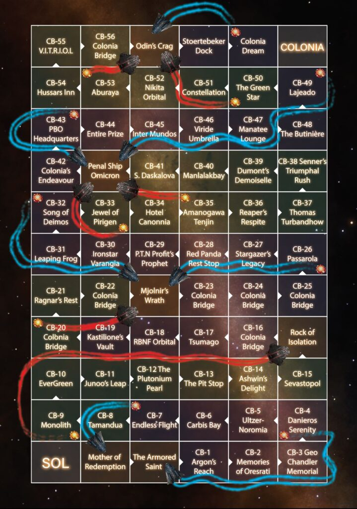

Kraits and Adders is a 34th Century adaptation of an ancient indian game called ‘Moksha-Patamu.’ or more commonly known in english speaking regions as, ‘snakes and ladders’.
Movement up the board represents the player’s spiritual journey, complicated by virtues – the ladders, and vices – the snakes.
In this 34th century version of the game the aim is to journey from Sol to Colonia. There are no virtues in this game and the vices are as likely to help you progress, as they are to hinder you.
Starting from Sol each player will
You can also play the game in reverse from Colonia to Sol or even with players playing in opposite directions. Usually players will take turns or they may agree to play simultaneously.

So this commander, JJ something I think he was called, came flying at the megaship in a hot rodded anaconda with all guns blazing screaming “Hurry up and shoot me you Mother F***ers I’ve got a record to beat”.
We skewered him with the base weapon system and blew that ship apart like it was cobwebs. As his escape pod was fired off into the prison system we heard him say “Thanks Lads”.
It must have cost him a fortune but he was back again the next day!
Anonymous ATC: CB-34 Hotel Canonnia
Rumor has it that well heeled commanders have been playing this game in heavily engineered ships, opening fire on the Colonia Bridge megaships and local fleet carriers, goading them to destroy their ships. After their ships are destroyed, they are transferred by the prison network to the nearest prison ship, which could be thousands of light years away. Then they simply pay the fines and insurance costs and are presented with a replacement ship as they exit the prison ship to continue their journey.
This game was created by commanders LCU No Fool Like One and Ned Slark